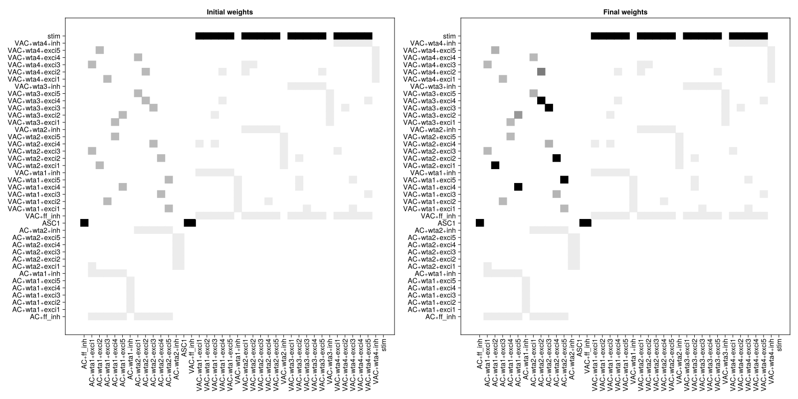
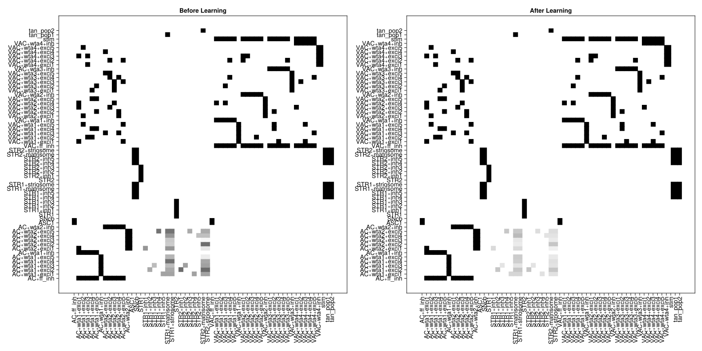

Synaptic Plasticity and Reinforcement Learning
Jupyter Notebook: Please work on
learning.ipynb.
<iframe width="560" height="315" src="https://www.youtube.com/embed/pBvgcIHK6GY?si=SxGU7CNdErHnvVKc" title="YouTube video player" frameborder="0" allow="accelerometer; autoplay; clipboard-write; encrypted-media; gyroscope; picture-in-picture; web-share" referrerpolicy="strict-origin-when-cross-origin" allowfullscreen></iframe>Introduction
In Neuroblox, we can add plasticity rules to our circuit models. The symbolic weights that are defined for every connection are the ones that are updated according to these plasticity rules after every simulation run. Weight updates are automatically handled after each simulation when doing reinforcement learning in Neuroblox. This is the topic that we will cover here.
We will consider two examples. First, a cortical circuit with Hebbian plasticity and then an extended circuit which implements reinforcement learning to categorize image stimuli between two categories without any a priori knowledge of the categorization rule.
In reinforcement learning (RL) we typically talk about an agent acting on an environment and then the environment returning new stimuli and rewards to the agent. We have used the same semantics in Neuroblox as we will see shortly. The Agent is constructed from the model graph and the ClassificationEnvironment is constructed by a Blox of multiple stimuli, which also contains information about the true category of each stimulus.
Learning goals
- Simulate circuits with Hebbian synaptic plasticity.
- Simulate circuits performing reinforcement learning in a behavioral task.
Cortico-Cortical Plasticity
using Neuroblox
using OrdinaryDiffEqDefault, OrdinaryDiffEqVerner ## to build the ODE problem and solve it, gain access to multiple solvers from this
using Random ## for generating random variables
using CairoMakie ## for customized plotting recipies for blox
using CSV ## to read data from CSV files
using DataFrames ## to format the data into DataFrames
using Downloads ## to download image stimuli files
N_trials = 10 ## number of trials
trial_dur = 1000 ## in ms
# download the stimulus images
image_set = CSV.read(Downloads.download("raw.githubusercontent.com/Neuroblox/NeurobloxDocsHost/refs/heads/main/data/stimuli_set.csv"), DataFrame) ## reading data into DataFrame format
model_name = :g
# define stimulus Blox
# t_stimulus: how long the stimulus is on (in ms)
# t_pause : how long the stimulus is off (in ms)
@named stim = ImageStimulus(image_set; namespace=model_name, t_stimulus=trial_dur, t_pause=0);
# Cortical Bloxs
@named VAC = Cortical(; namespace=model_name, N_wta=4, N_exci=5, density=0.05, weight=1)
@named AC = Cortical(; namespace=model_name, N_wta=2, N_exci=5, density=0.05, weight=1)
# ascending system Blox, modulating frequency set to 16 Hz
@named ASC1 = NextGenerationEI(; namespace=model_name, Cₑ=2*26,Cᵢ=1*26, alpha_invₑₑ=10.0/26, alpha_invₑᵢ=0.8/26, alpha_invᵢₑ=10.0/26, alpha_invᵢᵢ=0.8/26, kₑᵢ=0.6*26, kᵢₑ=0.6*26)
# learning rule
hebbian_cort = HebbianPlasticity(K=5e-4, W_lim=15, t_pre=trial_dur, t_post=trial_dur)
g = MetaDiGraph()
add_edge!(g, stim => VAC, weight=14)
add_edge!(g, ASC1 => VAC, weight=44)
add_edge!(g, ASC1 => AC, weight=44)
add_edge!(g, VAC => AC, weight=3, density=0.1, learning_rule = hebbian_cort) ## pass learning rule as a keyword argument
agent = Agent(g; name=model_name);
env = ClassificationEnvironment(stim, N_trials; name=:env, namespace=model_name);
fig = Figure(size = (1600, 800))
adjacency(fig[1,1], agent; title="Initial weights", colorrange=(0,7))
run_experiment!(agent, env; t_warmup=200.0, alg=Vern7())
adjacency(fig[1,2], agent; title="Final weights", colorrange=(0,7))
fig[ Info: Connection rule from VAC to AC not specified. Defaulting to a hypergeometric connection.
Notice how the weight values in the upper left corner (connections withHebbianPlasticity) have changed after simulation.Cortico-Striatal Circuit Performing Category Learning
This is one simplified biological instantiation of an RL system. It is carrying out a simple RL behavior but not faithfully simulating physiology. The experiment we are simulating here is the category learning experiment [Antzoulatos2014] which was successfully modeled through a detailed corticostriatal model [2].
time_block_dur = 90.0 ## ms (size of discrete time blocks)
N_trials = 100 ## number of trials
trial_dur = 1000 ## ms
image_set = CSV.read(Downloads.download("raw.githubusercontent.com/Neuroblox/NeurobloxDocsHost/refs/heads/main/data/stimuli_set.csv"), DataFrame) ## reading data into DataFrame format
# additional Striatum Bloxs
@named STR1 = Striatum(; namespace=model_name, N_inhib=5)
@named STR2 = Striatum(; namespace=model_name, N_inhib=5)
@named tan_pop1 = TAN(κ=10; namespace=model_name)
@named tan_pop2 = TAN(κ=10; namespace=model_name)
@named SNcb = SNc(κ_DA=1; namespace=model_name)
# action selection Blox, necessary for making a choice
@named AS = GreedyPolicy(; namespace=model_name, t_decision=2*time_block_dur)
# learning rules
hebbian_mod = HebbianModulationPlasticity(K=0.06, decay=0.01, α=2.5, θₘ=1, modulator=SNcb, t_pre=trial_dur, t_post=trial_dur, t_mod=time_block_dur)
hebbian_cort = HebbianPlasticity(K=5e-4, W_lim=7, t_pre=trial_dur, t_post=trial_dur)
g = MetaDiGraph()
add_edge!(g, stim => VAC, weight=14)
add_edge!(g, ASC1 => VAC, weight=44)
add_edge!(g, ASC1 => AC, weight=44)
add_edge!(g, VAC => AC, weight=3, density=0.1, learning_rule = hebbian_cort)
add_edge!(g, AC => STR1, weight = 0.075, density = 0.04, learning_rule = hebbian_mod)
add_edge!(g, AC => STR2, weight = 0.075, density = 0.04, learning_rule = hebbian_mod)
add_edge!(g, tan_pop1 => STR1, weight = 1, t_event = time_block_dur)
add_edge!(g, tan_pop2 => STR2, weight = 1, t_event = time_block_dur)
add_edge!(g, STR1 => tan_pop1, weight = 1)
add_edge!(g, STR2 => tan_pop1, weight = 1)
add_edge!(g, STR1 => tan_pop2, weight = 1)
add_edge!(g, STR2 => tan_pop2, weight = 1)
add_edge!(g, STR1 => STR2, weight = 1, t_event = 2*time_block_dur)
add_edge!(g, STR2 => STR1, weight = 1, t_event = 2*time_block_dur)
add_edge!(g, STR1 => SNcb, weight = 1)
add_edge!(g, STR2 => SNcb, weight = 1)
# action selection connections
add_edge!(g, STR1 => AS);
add_edge!(g, STR2 => AS);The last two connections add the ability to output actions. The AS Blox is a GreedyPolicy meaning that it will compare the activity of both Striatum Bloxs STR1 and STR2 and select the highest value. If STR1 wins then the left choice is made and if STR2 wins then the model chooses the right direction as the true dot movement direction.
agent = Agent(g; name=model_name, t_block = time_block_dur); ## define agent
env = ClassificationEnvironment(stim, N_trials; name=:env, namespace=model_name)
fig = Figure(title="Adjacency matrix", size = (1600, 800))
adjacency(fig[1,1], agent; title = "Before Learning", colorrange=(0,0.2))
trace = run_experiment!(agent, env; t_warmup=200.0, alg=Vern7(), verbose=true)(trial = [1, 2, 3, 4, 5, 6, 7, 8, 9, 10 … 91, 92, 93, 94, 95, 96, 97, 98, 99, 100], correct = Bool[0, 1, 0, 1, 1, 1, 0, 1, 1, 1 … 0, 1, 1, 1, 0, 1, 1, 1, 1, 1], action = [1, 1, 2, 2, 1, 2, 1, 2, 2, 2 … 1, 1, 2, 2, 2, 2, 2, 2, 1, 1], time = [10.653416684, 7.902696319, 10.887884634, 9.170553516, 9.114118931, 9.223959528, 9.176073419, 9.140674024, 9.203835317, 9.195178939 … 10.660379749, 7.593344891, 10.667420138, 7.59938584, 10.673399809, 7.592131847, 10.678420423, 7.590047601, 10.709782546, 7.60964095])trace is a vector of NamedTuples containing useful outcomes for each trial of the experiment:
trace.trial ## trial indices
trace.correct ## whether the response was correct or not on each trial
trace.action; ## what responce was made on each trial, 1 is left and 2 is right
adjacency(fig[1,2], agent; title = "After Learning", colorrange=(0,0.2))
fig
Notice the changes in weight values after the RL experiment.
Challenge Problems
- Visualize the model's performance in the category learning task as a function of time (trials). Hint: For correct trials
trace.correct = 1and for incorrect trialstrace.correct = 0. - Since this is an oversimplified instantiation of a cortico-striatal model, it is highly sensitive to the parameters, such that if we change the values of
TANparameters (maximum activityκ), or learning rates inHebbianModulationPlasticity(learning rate constantK), the system won’t be able to learn. Try playing with these parameters and figure out at what range of these parameters the model works.
References
- [1] Pathak A., Brincat S., Organtzidis H., Strey H., Senneff S., Antzoulatos E., Mujica-Parodi L., Miller E., Granger R. Biomimetic model of corticostriatal micro-assemblies discovers new neural code., bioRxiv 2023.11.06.565902, 2024
- [2] Antzoulatos EG, Miller EK. Increases in functional connectivity between prefrontal cortex and striatum during category learning. Neuron. 2014 Jul 2;83(1):216-25. doi: 10.1016/j.neuron.2014.05.005. Epub 2014 Jun 12. PMID: 24930701; PMCID: PMC4098789.
This page was generated using Literate.jl.